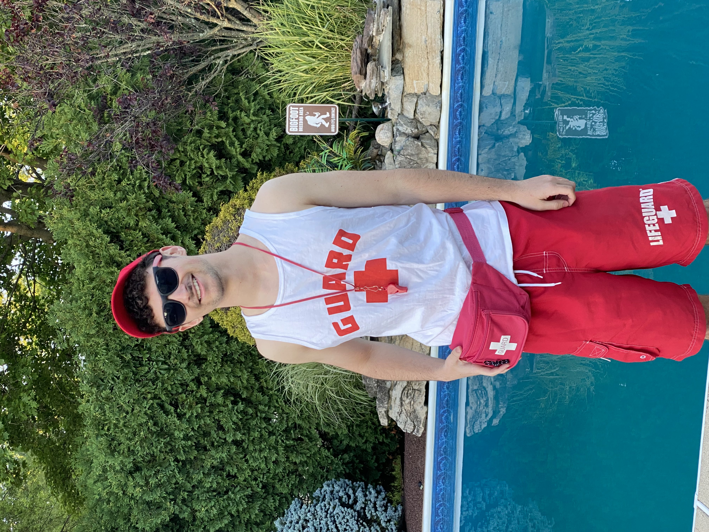

To support myself through college, I have worked at several jobs in different industries. Over the including working as a team member at Chick-fil-A, and as a banquet server and food runner at The Rum Runner. Over the past two years, these experiences have been instrumental in working on my feet and understanding of the importance of customer service. Below, I have listed of the kinds of jobs I have worked in the past:
Chick-Fil-A
2021 - 2022

I was 16 years old when I started working at Chick-Fil-A. Excluding summer camps, Chick-Fil-A was the first job I had ever worked at. I believe working in a fast-paced environment taught me valuble skills like thinking on my feet and handling multiple tasks at the same time. the way to customer service that Chick-Fil-A is known for.
At Chick-fil-A, I began as a front of house team member where I was responsible for a wide range of tasks, from taking orders and handling transactions to ensuring that the dining area and bathrooms were clean. Working at Chick-Fil-A taught me the imporatance of effective communication and customer service, as I interacted with customers daily, addressing their needs and resolving any issues that may come up. This fast-paced environment also helped me develop my ability to think on my feet and manage multiple tasks efficiently.
Lifeguarding
2021 - 2024
While I was working at Chick-Fil-A, I also became a certified Lifegaurd that summer. I think lifeguarding is a great job, in fact, I am still a certified lifeguard now. If I don't land an internship or another technical role for next summer, I would most likely be a lifeguard again.
I spent a significant portion of my summer lifeguarding at the Fort Monmouth Recreation Area in Tinton Falls, NJ. This pool was public, meaning that there were a wide range of demographics of people who came to swim there. At my county's pool, my primary responsibilities included ensuring the safety of all swimmers, enforcing pool rules, and responding to emergencies. This role required constant vigilance, as I had to monitor the pool area closely to prevent accidents and handle any issues that arose. I was trained in lifesaving techniques, including CPR and first aid, which prepared me to manage a range of situations from minor injuries to more critical emergencies effectively.
In addition to my work at the county pool, I also lifeguarded at private parties, which required me to adapt to various pool environments and manage safety in more informal settings. These private events included birthday parties, family gatherings, and community celebrations. Lifeguarding in these settings taught me the importance of flexibility and the ability to quickly adjust to different scenarios while maintaining a high standard of safety.
Through these experiences, I developed strong skills in safety management, emergency response, and communication. I learned to stay focused and calm under pressure, effectively address safety concerns, and interact with people from diverse backgrounds. The lessons and skills I gained from lifeguarding continue to influence my approach to problem-solving and teamwork in all areas of my life.
Rum Runner
2022 - 2023
After I left Chick-Fil-A, I transitioned to The Rum Runner, a high-end restaurant complete with views of the Atlantic Ocean and the bay. At the Rum Runner I gained exposure to customer service in a different setting. I first started out as just a food runner. As a food runner, I was responsible for the timely delivery of dishes from the kitchen to the dining area, which required me to stay organized and attentive to detail. This role emphasized the significance of efficiency and accuracy in service, as well as the need to communicate effectively with both the kitchen staff and the front-of-house team.
As I gained more experience working in the restaurant environment, I was promoted to a Banquet Server. As a banquet server, I was responsible for setting up banquet events such as bridal showers and baby showers and ensuring that guests at events had a seamless dining experience. This involved not only serving food and beverages, but also anticipating guests’ needs, and preparing supplies before-hand to stay on top of everything. As a Banquet Server, I learned the importance of maintaining a professional demeanor under pressure and the value of teamwork in delivering exceptional service.
Through these experiences, I have gained a deep appreciation for the importance of customer service and developed strong communication skills that are essential in any professional setting. The restaurant industry has taught me how to interact with diverse groups of people, handle challenging situations with grace, and ensure that each customer has a positive experience. These skills and lessons will undoubtedly serve me well in my future endeavors, both academically and professionally.